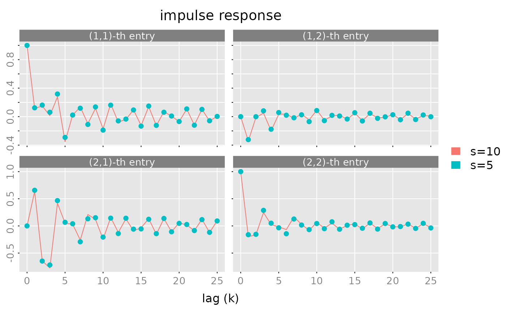

Rational Matrices
Wolfgang Scherrer and Bernd Funovits
2023-12-02
a_rational_matrices.RmdIntroduction
The rationalmatrices package is a collection of classes,
methods and functions for handling and manipulating rational matrices,
i.e matrices whose entries are rational functions entries. Such matrices
are in particular useful for linear dynamic time series models, like
VARMA and statespace models. This package is mainly designed and written
with regard to this application. See also the “companion” package
RLDM.
The main goal is to implement classes for rational matrices such that they may be handled similarly to ordinary matrices. In particular, arithmetic operations, like addition, should look and feel as the manipulations of ordinary matrices.
We start with some basic examples. First we create a scalar polynomial \(a(z)=1+0.9z+0.9z^2+0.9^3z^3\), check that the object is “valid” and print it:
a = polm(c(1,0.9,0.9^2,0.9^3))
is.polm(a)
#> [1] TRUE
print(a, format = 'c')
#> ( 1 x 1 ) matrix polynomial with degree <= 3
#> [,1]
#> [1,] 1 + 0.9z + 0.81z^2 + 0.729z^3Create a scalar rational matrix \(c(z) = a^{-1}(z) b(z)\) in LMFD form, check that the object is valid and print it:
c = lmfd(a, c(1, 0, 0.8^2))
is.lmfd(c)
#> [1] TRUE
print(c)
#> ( 1 x 1 ) left matrix fraction description a^(-1)(z) b(z) with degrees (p = 3, q = 2)
#> left factor a(z):
#> z^0 [,1] z^1 [,1] z^2 [,1] z^3 [,1]
#> [1,] 1 0.9 0.81 0.729
#> right factor b(z):
#> z^0 [,1] z^1 [,1] z^2 [,1]
#> [1,] 1 0 0.64Compute poles and zeroes of \(c(\cdot)\)
poles(c)
#> [1] 0.000000-1.111111i 0.000000+1.111111i -1.111111+0.000000i
zeroes(c)
#> [1] 0-1.25i 0+1.25iEvaluate \(a(z), b(z), c(z)\) on the unit circle and check that \(c=a^{-1}b\):
## evaluate
af = zvalues(c$a, n.f = 10)
bf = zvalues(c$b, n.f = 10)
cf = zvalues(c, n.f = 10)
all.equal(cf, af^(-1) %r% bf)
#> [1] TRUE
print(cf, format = 'iz|j', digits = 2)
#> ( 1 x 1 ) frequency response
#> [,1]
#> z=1+0i [1,] 0.48+0.00i
#> z=0.809-0.588i [1,] 0.47+0.19i
#> z=0.309-0.951i [1,] 0.44+0.52i
#> z=-0.309-0.951i [1,] 0.77+0.52i
#> z=-0.809-0.588i [1,] 0.81+1.31i
#> z=-1+0i [1,] 9.06+0.00i
#> z=-0.809+0.588i [1,] 0.81-1.31i
#> z=-0.309+0.951i [1,] 0.77-0.52i
#> z=0.309+0.951i [1,] 0.44-0.52i
#> z=0.809+0.588i [1,] 0.47-0.19iProduce a “Nyquist” plot, where the imaginary part is plotted versus the real part. In order to get a “nice, smooth” path, we evaluate the rational function \(c(z)\) on a grid of 1024 points on the unit circle:
Classes
There are several useful representations (realizations) for rational matrices. Here, we only consider polynomial matrices and rational matrices represented by a left matrix fraction description or by a statespace realization. Furthermore, the coefficients of the power series expansion (here called impulse response function) and a (sufficently rich) set of values of the rational matrix (here called frequency response function) uniquely determine the rational matrix and hence may be seen as another way to represent such a rational matrix.
There are no separate classes for rational scalars or rational vectors. A scalar is simply considered as an \((1\times 1)\) matrix and a vector is a \((m\times 1)\) (or\((1 \times n)\)) matrix.
Polynomial Matrices
Polynomial matrices
\[
a(z) = a_0 + a_1 z + \cdots + a_p z^p,\; a_i\in \mathbb{R}^{m\times n}
\mbox{ or } a_i \in \mathbb{C}^{m\times n}
\] are represented by objects of class polm. Such a
polm object is simply an \((m,n,p+1)\)-dimensional array which stores
the coefficients \(a_i\) together with
a class attribute c('polm','ratm').
Note: We allow for complex coefficients, empty polynomials (\(m=0\) or \(n=0\)) and zero polynomials (\(a(z)=0\) for all \(z\in \mathbb{C}\)). Zero polynomials may be represented by an \((m,n,0)\)-dimensional array, i.e. the degree \(p\) is equal to \(p=-1\).
The constructor for polynomial matrices is polm(). For
testing purposes one may use test_polm() to create (random)
polynomial matrices.
Left Matrix Fraction Description
Any rational \((m \times n)\) matrix \(c(z)\) may be represented as \(c(z) = a^{-1}(z) b(z)\), where
\[ a(z) = a_0 + a_1 z + \cdots + a_p z^p \] is an \((m \times m)\) (non singular) polynomial matrix of degree \(p\), and
\[
b(z) = b_0 + b_1 z + \cdots + b_q z^q
\] is an \((m \times n)\)
dimensional matrix polynomial of degree \(q\).
The matrix \(c(z)\) is thus described
by the pair \((a(z), b(z))\). Note that
the “factors” \(a(z), b(z)\) are by no
means unique for given \(c(z)\).
Internally such LMFDs are stored as a matrix
\[
[a_0,a_1,\ldots,a_p,b_0,\ldots,b_q] \in \mathbb{R}^{m \times
(m(p+1)+n(q+1))}
\] with an attribute order = c(m,n,p,q) and a class
attribute c('lmfd','ratm').
Note: We demand \(m>0\), since it is not clear how to interpret the inverse of an \((0 \times 0)\)-dimensional matrix. Since \(a(z)\) is non singular, \(p\geq 0\) must hold.
The constructor for lmfd objects is lmfd().
For testing purposes one may use test_lmfd() to create
(random) rational matrices in LMFD form.
Statespace Representation
Any rational (\((m \times n)\)-dimensional) matrix \(c(z)\) which has no pole at \(z=0\) may be represented as
\[ c(z) = C(z^{-1}I_s - A)^{-1}B + D \] where \(A\in \mathbb{R}^{s\times s}\), \(B\in \mathbb{R}^{s\times n}\), \(C\in \mathbb{R}^{m\times s}\) and \(D\in \mathbb{R}^{m\times n}\). The integer \(s\) is called the state dimension of the above realization. Statespace representations are by no means unique, even the state dimension \(s\) is not unique. If the state dimension \(s\) is minimal among all possible realizations of \(c(z)\) then the representation is called minimal.
Internally, statespace realizations are stored as a matrix
\[
\begin{bmatrix}
A & B \\
C & D
\end{bmatrix} \in \mathbb{R}^{(s+m) \times (s+n)}
\] with an attribute order = c(m,n,s) and a class
attribute c('stsp','ratm').
Notes:
- E.g. the elementary rational function \(c(z)=z^{-1}\) does not have a
statespace realization of the above form.
- Any of the integers \(m,n,s\) may be zero.
- Many (algebraic) operations are very easy to implement in terms of statespace representations. Therefore, the package is somewhat “biased” towards statespace representations.
The constructor for stsp objects is stsp().
For testing purposes one may use test_stsp() to create
(random) rational matrices in statespace form.
Power Series
Impulse response function or transfer function are also used for the same object.
If the rational matrix \(c(z)\) has no pole at \(z=0\), then there exists a power series expansion
\[ c(z) = k_0 + k_1 z^1 + k_2 z^2 + \cdots \] which converges in a (non-empty) circle around \(z=0\). The sequence of coefficients \((k_j \,|\, j \geq 0)\) here is called impulse response function1.
An pseries object stores a finite sequence \((k_0,\ldots,k_l)\) as \((m,n,(l+1))\) dimensional array with a
class attribute c('stsp','ratm').
Note: Due to the rational structure, a
finite sequence of coefficients is sufficient to reconstruct
the rational matrix \(c(z)\), see
e.g. the Ho-Kalman realization algorithm implemented in
pseries2stsp and the function pseries2lmfd.
(Of course the number of coefficients has to be large enough.) Hence, we
can interpret (a finite) impulse response function as another way to
represent rational matrices.
Frequency Response
A rational matrix is also uniquely determined by a (finite) set of
function values. An object of class zvalues is an \((m,n,k)\) dimensional array (which stores
the values \(c(z_j)\), \(j=1,\ldots,k\) together with an attribute
z (which is a vector with components \(z_j\), \(j=1,\ldots,k\)) and a class attribute
c('freqressp','ratm').
If the rational matrix represents the transfer function of a (rational) filter, then often the matrix is evaluated at a grid of points on the unit circle
\[ f_j = (j-1)/k,\qquad z_j = \exp(-i(2\pi f_j)),\qquad j=1,\ldots,k \]
Notes:
- As stated above the rational function is uniquely determined from a finite (but sufficiently rich) set of values. However, we have not implemented an algorithm which computes an “LMFD” or “statespace” representation for given frequency response.
Operations and Methods
General Methods
-
is.polm(x),is.lmfd(x),is.stsp(x),is.pseries(x),is.zvalues(x)test whether the objectxis a valid (rational matrix) object. -
dim(x)returns a (named) vector with the dimensions of the rational matrix object. - The
strmethods produces a one-line description of rational matrix objects. - The
printmethods tries to produce a compact display of the rational matrix object. -
plotmethods are implemented forpseriesandzvaluesobjects.
Convert from Class x to Class y
An essential goal of the package is to provide tools, which allow a simple conversion of one representation (realization) to another.
The following table gives an overview of these “conversion” procedures:
The colors of the cells mean
- orange-red: does not make sense (in general)
- light-steel-blue: use a two step procure, e.g
as.lmfd(pseries(x, lag.max)) - gold: not (yet) implemented
The core procedures which compute an LMFD or statespace realization for given impules reponse are described in the following subsection. Some more information may be found in the vignette “technical details”.
Realization Algorithms
One of the characteristic features of rational functions is that the Hankel matrix of the impulse response2 coefficients
\[ H = \begin{pmatrix} k_1 & k_2 & \cdots \\ k_2 & k_3 & \cdots \\ \vdots & \vdots & \end{pmatrix} \] has finite rank.
If the rational matrix \(k(z)\) has an LMFD representation \(k(z)=a^{-1}(z)b(z)\), \(a(z)=a_0 + a_1 z + \cdots + a_p z^p\), \(b(z)=b_0 + b_1 z + \cdots + b_q z^q\) then
\[ a(z)(k(z)-k_0) = b(z) - a(z)k_0 \] implies that
\[ a_0 k_l + a_1 k_{l-1} + \cdots + a_p k_{l-p} = 0 \mbox{ for } l>\max(p,q) \]
This implies that the Hankel matrix indeed has finite rank and furthermore that we can construct the matrix \(a(z)\) from the left kernel of the Hankel matrix. For given \(a()\) and \(k()\), \(b(z)\) follows from \(b(z)=a(z)k(z)\).
In order to describe the linear dependence structure of the rows of \(H\) it is convenient to use a “double” index for the rows: Let \(h(i,j)\in \mathbb{R}^{1\times \infty}\) denote the \(j\)-th row in the \(i\)-th block row of \(H\), i.e. \(h(i,j)\) is the \(((i-1)m+j)\)-th row of \(H\).
A selection \(\mathcal{S}=\{h(i_k,j_k) \,|\, k=1,\ldots ,s\}\) of rows of the Hankel matrix is called a nice selection, if there are no “holes” in the sense that \(h(i,j)\in \mathcal{S}\), \(i>1\) implies that \(h(i-1,j)\in \mathcal{S}\). Nice selections may be described by a multi-index \(\nu = (\nu_1, \ldots, \nu_m)\), where \(\nu_j=\max \{i\,|\,h(i,j)\in \mathcal{S}\}\).
Suppose that \(H\) has rank \(s\). In general there are many different selections of rows of \(H\) which form a basis for the row space of \(H\). In the following we choose the first \(s\) rows of \(H\) which form a basis of the row space and denote the corresponding selection with \(\mathcal{S}=\{h(i_k,j_k) \,|\, k=1,\ldots ,s\}\). Due to the Hankel structure of \(H\) this is a nice selection in the above sense. The corresponding \(\nu_j\)’s are called Kronecker indices of the Hankel matrix (respectively of the rational matrix \(k(\cdot)\)). Note that the sum of the Kronecker indices is equal to the rank of \(H\): \(\sum_{j=1}^m \nu _j = s\).
For a given (nice) selection of basis rows, one may construct a
unique LMFD representation of the rational matrix. In particular, if we
choose the above described “canonical” basis then one obtains the so
called echelon form left matrix fraction description of the
rational matrix. This procedure is implemented in the tool
pseries2lmfd(). The S3 method
as.lmfd.pseries() is just a wrapper function, which calls
pseries2lmfd() with some default parameters.
Quite analogously one may also construct a statespace realization of
\(k(\cdot)\) with the
Ho-Kalman algorithm. See the tools pseries2stsp()
and as.stsp.pseries().
For a more detailed discussion on Kronecker indices and echelon canonical forms, see @Hannan.Deistler12.
Examples
We first create a random \((2 \times 2)\) rational matrix in statespace form with a state dimension \(s=5\). Generically the first \(s\) rows of the Hankel matrix form a basis and hence the Kronecker indices are \(\nu_1 = 3\) and \(\nu_2=2\):
# create a random rational matrix in statespace form
X = test_stsp(dim = c(2,2), s = 5, digits = 2)
X
#> statespace realization [2,2] with s = 5 states
#> s[1] s[2] s[3] s[4] s[5] u[1] u[2]
#> s[1] -0.35 0.43 -1.05 -2.39 2.21 1.16 1.26
#> s[2] 1.02 -0.63 -0.77 0.48 0.07 -0.23 0.20
#> s[3] 0.19 0.94 -1.37 0.86 -0.18 1.31 -1.33
#> s[4] -0.82 1.04 1.90 -1.05 -0.40 -0.14 0.00
#> s[5] 0.39 0.23 0.78 0.86 -1.85 0.74 0.32
#> x[1] 0.56 1.66 -1.39 -0.09 0.92 1.00 0.00
#> x[2] 0.73 -2.23 -1.21 0.65 1.09 0.00 1.00
# compute the impulse response function,
# the Kornecker indices and the corresponding indices of the "basis" rows.
K = pseries(X, lag.max = 10)
nu = pseries2nu(K)
cat('Kronecker indices: ', nu,'\n',
' basis rows: ', nu2basis(nu))
#> Kronecker indices: 3 2
#> basis rows: 1 2 3 4 5Next we take the impulse response function and compute a statespace realization of this rational matrix in echelon form:
X = pseries2stsp(K, method = 'echelon')$Xs
print(X, digits = 2)
#> statespace realization [2,2] with s = 5 states
#> s[1] s[2] s[3] s[4] s[5] u[1] u[2]
#> s[1] 0.00 0.00 1.00 0.00 0.00 -0.86 3.18
#> s[2] 0.00 0.00 0.00 1.00 0.00 0.49 2.43
#> s[3] 0.00 0.00 0.00 0.00 1.00 3.23 0.90
#> s[4] -3.17 -3.52 -1.21 -4.29 -0.11 2.53 -9.75
#> s[5] -3.94 -3.03 1.04 -2.51 -0.96 -2.63 2.83
#> x[1] 1.00 0.00 0.00 0.00 0.00 1.00 0.00
#> x[2] 0.00 1.00 0.00 0.00 0.00 0.00 1.00
# check the result
all.equal(pseries(X, lag.max = 10), K)
#> [1] TRUEWe may also create a rational matrix with prescribed Kronecker indices. Here we generate a \((3\times 2)\) matrix with Kronecker indices \(\nu =(2,3,1)\) and in addition we demand that the matrix is stable. i.e. the matrix no poles inside the unit circle:
nu = c(2,3,1)
X = test_stsp(dim = c(3,2), nu = nu, D = matrix(c(1,NA,NA, 0, 1, NA), nrow = 3, ncol = 2),
digits = 2, bpoles = 1)
X
#> statespace realization [3,2] with s = 6 states
#> s[1] s[2] s[3] s[4] s[5] s[6] u[1] u[2]
#> s[1] 0.00 0.00 0.00 1.00 0.00 0.00 1.47 -0.02
#> s[2] 0.00 0.00 0.00 0.00 1.00 0.00 -1.51 -0.21
#> s[3] -0.06 0.16 0.50 1.11 -0.67 0.00 -0.32 -0.70
#> s[4] -0.24 0.58 0.26 0.23 -0.42 0.00 -1.75 -0.45
#> s[5] 0.00 0.00 0.00 0.00 0.00 1.00 -0.52 -0.44
#> s[6] 0.59 0.23 -0.19 0.82 -0.13 0.53 -1.13 0.93
#> x[1] 1.00 0.00 0.00 0.00 0.00 0.00 1.00 0.00
#> x[2] 0.00 1.00 0.00 0.00 0.00 0.00 0.61 1.00
#> x[3] 0.00 0.00 1.00 0.00 0.00 0.00 0.80 0.55
# compute impulse response
K = pseries(X, lag.max = 10)
# and check the Kronecker indices
all.equal(pseries2nu(K), nu)
#> [1] TRUEAn LMFD realization of this matrix \(X\) is obtained a s follows
X = pseries2lmfd(K)$Xl
X
#> ( 3 x 2 ) left matrix fraction description a^(-1)(z) b(z) with degrees (p = 3, q = 3)
#> left factor a(z):
#> z^0 [,1] [,2] [,3] z^1 [,1] [,2] [,3] z^2 [,1] [,2] [,3] z^3 [,1]
#> [1,] 1.00 0.00 0 -0.23 0.42 0.0 0.24 -0.58 -0.26 0.00
#> [2,] 0.00 1.00 0 0.00 -0.53 0.0 -0.82 0.13 0.00 -0.59
#> [3,] -1.11 0.67 1 0.06 -0.16 -0.5 0.00 0.00 0.00 0.00
#> [,2] [,3]
#> [1,] 0.00 0.00
#> [2,] -0.23 0.19
#> [3,] 0.00 0.00
#> right factor b(z):
#> z^0 [,1] [,2] z^1 [,1] [,2] z^2 [,1] [,2] z^3 [,1] [,2]
#> [1,] 1.0000 0.00 1.4962 0.4000 -3.0441 -1.2566 0.0000 0.0000
#> [2,] 0.6100 1.00 -1.8333 -0.7400 -0.4604 -0.1987 -2.8344 1.0268
#> [3,] 0.0987 1.22 -3.4010 -1.2535 0.0000 0.0000 0.0000 0.0000
all.equal(pseries(X, lag.max = 10), K)
#> [1] TRUEThe set \((1,2,3,5,6,7)\) does
not correspond to a nice selection of rows of a Hankel matrix
(with \(m=3\)). The corresponding set
of rows (using the above described “double indices”) is \(\mathcal{S}=\{h(1,1),h(1,2),h(1,3),h(2,2),h(2,3),h(3,1)\}\).
The set \(\mathcal{S}\) contains the
row \(h(3,1)\) but not the row \(h(2,1)\) and hence it is not a nice
selection. Therefore the function basis2nu throws an error,
if we try to compute the correponding Kronecker indices:
Arithmetics
The group method function Ops.ratm() allows to perform
arithmetic operations on rational matrices using ordinary arithmetic
operators.
The Unary Operators +a and
-a
These operators have the usual meaning and are implemented for all rational matrix classes.
The Power Operator a^k
The power operator a^k is only implemented for square,
rational matrices \(a(z)\) and integers
\(k \in \mathbb{Z}\).
-
a^0works for all classes and returns the identity matrix, represented by an object of the same class as the input argumenta. Note: This means e.g. \(0^0 = 1\)! -
a^1works for all classes and simply returns the input argumenta. -
a^kfor \(k>1\) is implemented for all classes. Howeverlmfdobjects are first coerced to statespace realizations. Thus the result in this case is an object of classstsp. In all other cases, the result is of the same class as the input argumenta. -
a^kfor \(k<0\) is implemented for all classes. However, \(a\) must be non empty and objects of classpolmandlmfdare first coerced tostspobjects. This means that the result has classstspif the input is apolm,lmfdorstspobject and it has classpseriesorzvaluesif the input is anpseriesrespectivelyzvaluesobject.
Binary Operators
For the binary operators (like ‘a + b’) the two arguments are first coerced to a common class. To this end we use the following pseudo ordering of classes:
matrix \(\;\prec\;\)
polm \(\;\prec\;\)
lmfd \(\;\prec\;\)
stsp \(\;\prec\;\)
pseries \(\;\prec\;\)
zvalues
The following table shows how the class of the result depends on the
classes of a and b:

Note:
- Objects which are not “rational matrices” are first coerced to
polmobjects. If this fails an error is thrown. In the above table this case is represented by the labelmatrix. -
lmfdobjects are first coerced tostspobjects. - If two
pseriesobjects are combined then they are truncated to the minimum of the respective number of “lags”. - Two
zvaluesobjects are only combined if the “z” values are identical. Otherwise an error is thrown. - The statespace realizations computed are in general not
minimal. This remark also applies to other operations, like the
power
a^k. - Of course the two arguments must be compatible, e.g. for elementwise operations they must have the same number of rows and columns. However for elementwise operations one of the arguments may be a scalar, i.e. a \((1 \times 1)\) matrix. Such arguments are “expanded” to matrices (of compatible dimension) with identical elements.
- There is no automatic coercion of
pseriesobjects tozvaluesobjects, since there is no guarantee that thepseriesobject has sufficiently many lags. Of course the user may perform this coercion manually.
The above table applies for
- addition
a+b - substraction
a-b - elementwise multiplication
a * b - matrix multiplication
a %r% b - bind operations
rbind(a,b,...)andcbind(a,b,...)
The polynomial division and remainder operators a %/% b
and a %% b are only implemented for polm
objects or objects which may coerced to polm objects. These
operations are also elementwise operations and hence the above remark on
scalar arguments applies here.
Transposition of Rational Matrices
“Ordinary” transpose \(x'(z)\)
The transposition operator (function) t(x) is
implemented for all classes, except for lmfd objects,
i.e. rational matrices in LMFD form (and should work as expected).
As an example consider the construction of a Right Matrix Fraction Description of a rational matrix \(x(z) = b(z)a^{-1}(z)\). The trick is simply to construct an LMFD of the transpose \(x'(z) = \hat{a}^{-1}(z) \hat{b}(z)\), then \(\hat{b}'(z)(\hat{a}')^{-1}(z) = x(z)\) is the desired RMFD of \(x(z)\):
# create random rational, stable, (3 x 2) matrix in statespace form
x = test_stsp(dim = c(3,2), s = 2, bpoles = 1)
# compute the impulse response
k = pseries(x, lag.max = 5)
# Compute an LMFD realization of the transpose
tx = as.lmfd(t(k))
a = t(tx$a)
b = t(tx$b)
# check
all.equal(zvalues(x), zvalues(b) %r% (zvalues(a)^{-1}))
#> [1] TRUEHermitean transpose \(x^*(z)\)
-
The Hermitean transpose
Ht(x)is only implemented for frequency response objects and statespace realizations with a regular state transition matrix \(A\).
The Hermitean transpose of a rational matrix \(a(z)\) is defined as \[ a^*(z) = \overline{a(\bar{z}^{-1})}' \] If \(a(z)\) has real coefficients and \(|z|=1\) then \(a^*(z)=\overline{a(z)}'\).As an example consider \[ a(z) = \frac{1+0.5z}{1+0.1z+0.1z^2+0.1z^3-0.8z^4} \]
(a = as.stsp(lmfd(c(1,0.1,0.1,0.1,-0.8),c(1,0.5))))
#> statespace realization [1,1] with s = 4 states
#> s[1] s[2] s[3] s[4] u[1]
#> s[1] -0.1 -0.1 -0.1 0.8 0.7866
#> s[2] 1.0 0.0 0.0 0.0 -0.1260
#> s[3] 0.0 1.0 0.0 0.0 -0.1400
#> s[4] 0.0 0.0 1.0 0.0 0.4000
#> x[1] 0.0 0.0 0.0 1.0 1.0000
fr = zvalues(a, n.f = 101)
sp = fr %r% Ht(fr)
max(abs(Im(sp)))
#> [1] 0
all.equal(sp, zvalues(a %r% Ht(a), n.f = 101))
#> [1] TRUE
plot(sp)The Hermitean transpose plays an important role for the spectral density of VARMA processes and processes which are defined via statespace models.
Bind Rational Matrices by Rows and Columns
The methods
-
rbind(...)and cbind(...)
have their usual meaning, i.e. they take a list of rational matrix
objects and combine them by rows or columns. Before the matrices are
combined they are coerced to objects of the same class, as described in
the section on arithmetic operations. In particular note that
lmfd objects are coerced to stsp objects!
Howver, if only one argument is given then no coercion is performed,
i.e. if x is an lmfd object then
bind(x) returns an lmfd object.
Note that the statespace realizations in general are
not minimal. The number of lags for
pseries objects is the minimum of the number of lags of
each of them. Objects of class zvalues are only combined if
their z attributes (the complex points where the rational
function(s) have been evaluated) are identical.
Extract Parts, Replace Parts
The subsetting operation x[,] for rational matrices
works analogously to the subsetting of ordinary matrices. The result is
an object of the same class. However, this operator is not implemented
for lmfd objects. Hence x[i,j] throws an error
if x is an lmfd object!
-
x[]andx[,]simply return the objectx. -
x[i]returns an \((s,1)\) dimensional matrix with elements selected by the indexi. -
x[i,j]returns a matrix with rows selected byiand columns selected byj.
x = test_polm(dim = c(2,3), degree = 2)
x
#> ( 2 x 3 ) matrix polynomial with degree <= 2
#> z^0 [,1] [,2] [,3] z^1 [,1] [,2] [,3] z^2 [,1] [,2] [,3]
#> [1,] 110 120 130 111 121 131 112 122 132
#> [2,] 210 220 230 211 221 231 212 222 232
x[,]
#> ( 2 x 3 ) matrix polynomial with degree <= 2
#> z^0 [,1] [,2] [,3] z^1 [,1] [,2] [,3] z^2 [,1] [,2] [,3]
#> [1,] 110 120 130 111 121 131 112 122 132
#> [2,] 210 220 230 211 221 231 212 222 232
x[c(1,2,6)]
#> ( 3 x 1 ) matrix polynomial with degree <= 2
#> z^0 [,1] z^1 [,1] z^2 [,1]
#> [1,] 110 111 112
#> [2,] 210 211 212
#> [3,] 230 231 232
x[c(2,1), c(2,2,2)]
#> ( 2 x 3 ) matrix polynomial with degree <= 2
#> z^0 [,1] [,2] [,3] z^1 [,1] [,2] [,3] z^2 [,1] [,2] [,3]
#> [1,] 220 220 220 221 221 221 222 222 222
#> [2,] 120 120 120 121 121 121 122 122 122
x = test_stsp(dim = c(3,3), s = 6)
# the statements pseries(x[c(2,4)]) and pseries(x)[c(2,4)] are equivalent
all.equal(pseries(x[c(2,4)]), pseries(x)[c(2,4)])
#> [1] TRUE
x = test_lmfd(dim = c(2,3), degrees = c(1,1))
try(x[,]) # throws an error
#> ( 2 x 3 ) left matrix fraction description a^(-1)(z) b(z) with degrees (p = 1, q = 1)
#> left factor a(z):
#> z^0 [,1] [,2] z^1 [,1] [,2]
#> [1,] 1 0 1.103029 -1.3916966
#> [2,] 0 1 1.037564 0.1413492
#> right factor b(z):
#> z^0 [,1] [,2] [,3] z^1 [,1] [,2] [,3]
#> [1,] 1.396792 1.102716 0.6893530 -0.9366515 -1.7307931 1.2415333
#> [2,] 1.477923 2.094810 0.2146849 0.2121534 0.8942118 0.2735926The $ operator may be used to extract the \(a\), \(b\)
polynomial of a left matrix fraction description (lmfd
object) and the matrices \(A,B,C,D\) of
a state space representation (stsp object).
# extract a(z) polynomial
x$a
#> ( 2 x 2 ) matrix polynomial with degree <= 1
#> z^0 [,1] [,2] z^1 [,1] [,2]
#> [1,] 1 0 1.103029 -1.3916966
#> [2,] 0 1 1.037564 0.1413492The assigment operation x[,] <- value is only
implemented for polynomial matrices and works quite analogously to the
assigment operation of “ordinary” matrices.
a = test_polm(dim = c(3,2), degree = 1)
print(a, format = 'c')
#> ( 3 x 2 ) matrix polynomial with degree <= 1
#> [,1] [,2]
#> [1,] 110 + 111z 120 + 121z
#> [2,] 210 + 211z 220 + 221z
#> [3,] 310 + 311z 320 + 321z
# no items to replace, a is not changed
a[FALSE] = 0
print(a, format = 'c')
#> ( 3 x 2 ) matrix polynomial with degree <= 1
#> [,1] [,2]
#> [1,] 110 + 111z 120 + 121z
#> [2,] 210 + 211z 220 + 221z
#> [3,] 310 + 311z 320 + 321z
# set elements below the diagonal equal to zero
a[lower.tri(matrix(0, nrow = 3, ncol = 2))] = 0
print(a, format = 'c')
#> ( 3 x 2 ) matrix polynomial with degree <= 1
#> [,1] [,2]
#> [1,] 110 + 111z 120 + 121z
#> [2,] 0 220 + 221z
#> [3,] 0 0
# set (3,1) element
a[3,1] = c(1,-1)
print(a, format = 'c')
#> ( 3 x 2 ) matrix polynomial with degree <= 1
#> [,1] [,2]
#> [1,] 110 + 111z 120 + 121z
#> [2,] 0 220 + 221z
#> [3,] 1 - z 0
# set the elements in the first two rows and columns
a[1:2, 2:1] = array(c(1,0,0,0,0,1,0,0,0,0,1,0,0,0,0,1),
dim = c(2,2,4))
print(a, format = 'c')
#> ( 3 x 2 ) matrix polynomial with degree <= 3
#> [,1] [,2]
#> [1,] z^2 1
#> [2,] z^3 z
#> [3,] 1 - z 0
# this produces a warning,
# left hand side refers to 3 elements but
# the right hand side has 2 elements!
a[, 1] = test_polm(dim = c(2,1), degree = 4)
#> Warning in `[<-.polm`(`*tmp*`, , 1, value = structure(c(110, 210, 111, 211, :
#> number of items to replace is not a multiple of replacement length
print(a, format = 'c')
#> ( 3 x 2 ) matrix polynomial with degree <= 4
#> [,1] [,2]
#> [1,] 110 + 111z + 112z^2 + 113z^3 + 114z^4 1
#> [2,] 210 + 211z + 212z^2 + 213z^3 + 214z^4 z
#> [3,] 110 + 111z + 112z^2 + 113z^3 + 114z^4 0Note: The subsetting and the assigment operators do not allow “named” arguments. Therefore the following statements throw an error
Poles and Zeroes
Polynomials
The zeroes of a square (\(m\times m\))-dimensional, non singular polynomial matrix \(a(z)=a_0+a_1z+\cdots a_p z^p\), with \(\det(a_0)\neq 0\) are the reciprocals of the non zero eigenvalues of the companion matrix
\[ A = \begin{pmatrix} -a_0^{-1}a_1 & \cdots & -a_0^{-1} a_{p-1} & -a_0^{-1} a_p \\ I_m & \cdots & 0 & 0 \\ \vdots & \ddots & \vdots & \vdots \\ 0 & \cdots & I_m & 0 \end{pmatrix} \in \mathbb{R}^{mp\times mp} \]
This fact is used by zeroes.polm. However, there are
some problems with this (simple) approach.
- It does not work for polynomials with a zero at \(z=0\) (\(a_0\) is singular). An alternative is to
use the function
is.coprimewhich uses a (singular) pencil. See the examples below. - Due to numerical errors the function
eigen(which is used to compute the eigenvalues of the companion matrix) may return some (very small) eigenvalues instead of exact zeroes. The functionzeroes.polmtherefore skips all eigenvalues which are smaller than a certain threshold. If the optionprint_messageis set toTRUEthen a corresponding message is printed. Clearly, choosing a too small tolerance bound may result in some very large “spurious”” zeroes. On the other hand if the bound is too large, then some of the “true” zeroes may be skipped.
To summarize. There are numerical problems if the coefficient \(a_0\) is ill conditioned or if the companion matrix \(A\) is (close to) singular.
# polynomial with degree p = 0 ##############################
zeroes(polm(diag(3))) # returns empty vector
#> numeric(0)
# (2 x 2) polynomial with degree 2 ##########################
a = test_polm(dim = c(2,2), degree = 2)
(z = zeroes(a))
#> [1] -0.5-0.8660254i -0.5+0.8660254i -0.5-0.8660254i -0.5+0.8660254i
# check the rank of a(z) at the computed zeroes
az = unclass(zvalues(a, z))
apply(az, MARGIN = 3, FUN = function(x) {d = svd(x)$d; min(d)/max(d)})
#> [1] 5.368273e-14 5.368273e-14 5.364620e-14 5.364620e-14
# (2 x 2) polynomial with degree 2 ##########################
# and singular coefficient matrix a[2]
a = test_polm(dim = c(2,2), degree = 2,
col_end_matrix = matrix(1, nrow = 2, ncol =2) )
(z = zeroes(a))
#> [1] -0.5-0.8660254i -0.5+0.8660254i -0.5-0.8660254i -0.5+0.8660254i
# alternatively, we may also use is.coprime()
is.coprime(a, only.answer = FALSE)$zeroes
#> [1] -0.5+0.8660254i -0.5-0.8660254i -0.5+0.8660254i -0.5-0.8660254i
# (2x2) polynomial matrix with degree 2 #####################
# and singular coefficient matrix a[0]
a = polm(dbind(d = 3, matrix(1, nrow = 2, ncol = 2),
test_array(dim = c(2,2,2))))
# zeroes(a) throws an error!
try(zeroes(a))
#> Error in zeroes.polm(a) :
#> Could not generate companion matrix. Coefficient pertaining to smallest degree might be singular.
# However, we may use is.coprime() in this case
is.coprime(a, only.answer = FALSE)$zeroes
#> [1] -1.000000e+00 -1.000000e+00 -7.917564e-10 7.917563e-10Left Matrix Fraction Descriptions
Suppose \(c(z)= a^{-1}(z) b(z)\) is an \((m \times n)\) dimensional rational matrix (\(a\) and \(b\) are polynomials). If \((a,b)\) are left coprime then the poles of \(c\) are the zeroes of \(a\). Furthermore if \(c\) is square, then the zeroes of \(c\) are the zeroes of \(b\).
Therefore the methods poles.lmfd and
zeroes.lmfd simply use zeroes.polm in order to
compute poles and zeroes of a rational matrix given in LMFD form. This
implies that all the above caveats also apply here. E.g. the methods
only work for the case that \(a_0\)
(respectively \(b_0\)) is non
singular.
In addition the routines do not provide the correct answers in the
case that the pair \((a,b)\) is
not left coprime. Here a pole/zero cancellation may occur,
which is not taken into account by the methods poles.lmfd
and zeroes.lmfd. This means that the functions may return
some spurious poles and zeroes.
# create a random rational (2 x 2) matrix in LMFD form with p = 1, q = 2
# note that two random polynomials are "generically" left coprime
set.seed(8924)
a = test_polm(dim = c(2,2), degree = 1, random = TRUE)
b = test_polm(dim = c(2,2), degree = 2, random = TRUE)
c = lmfd(a,b)
# poles of c=a^{-1}b are the zeroes of a
poles(c)
#> [1] 0.4136219 -0.9481900
all.equal(sort(poles(c)), sort(zeroes(a)))
#> [1] TRUE
# zeroes of c=a^{-1}b are the zeroes of b
zeroes(c)
#> [1] 0.01188418+0.0000000i -0.44699481+0.0000000i -0.07539272-0.8587459i
#> [4] -0.07539272+0.8587459i
all.equal(sort(zeroes(c)), sort(zeroes(b)))
#> [1] TRUENow we construct an LMFD where a,b are not coprime. We simply simply multiply the above matrices \(a,b\) with a common factor \(r\) and note that \((r a)^{-1} (r b) = a^{-1} b = c\).
# generate random common factor
r = test_polm(dim = c(2,2), degree = 1, random = TRUE)
ra = r %r% a
rb = r %r% b
cc = lmfd(ra,rb)
# here we get two "spurious" poles/zeroes
(pz = round(poles(cc), 6))
#> [1] 0.413622 -0.817746 -0.948190 2.707221
(zz = round(zeroes(cc), 6))
#> [1] 0.011884+0.000000i -0.446995+0.000000i -0.817746+0.000000i
#> [4] -0.075393-0.858746i -0.075393+0.858746i 2.707221+0.000000i
# the zeroes of r pop up as poles and zeroes of cc
sort(round(zeroes(r), 6))
#> [1] -0.817746 2.707221
sort(intersect(pz, zz))
#> [1] -0.817746+0i 2.707221+0i
set.seed(NULL)Statespace Representation
Let \(k(z) = C(z^{-1}I - A)^{-1}B + D\) be a rational matrix, given in state space form. If the statespace representation is minimal then the poles of \(k\) are the reciprocals of the non zero eigenvalues of \(A\). Furthermore if \(k\) is square and if \(D\) is regular (i.e. if \(k(0)=D\) is regular) then the zeroes of \(k\) are the reciprocals of the eigenvalues of the matrix \((A-BD^{-1}C)\).
The methods poles.stsp and zeroes.stsp
therefore compute the poles (and zeroes) of \(k\) via the eigenvalues of \(A\) (respectively of \((A-BD^{-1}C)\)). However, they do not check
whether the statespace realization is minimal.
Here analogous warnings are in place as for the polynomial and the LMFD case:
- The procedures may return “spurious” poles or zeroes if the representation is not minimal.
- The procedures use a threshold (
tol) in order to decide whether a small eigenvalue returned byeigenis due to a “true zero” eigenvalue or not. - The computation of zeroes is only implemented for the case that \(k\) has no zero at \(z=0\). If \(D\) is ill conditioned then the results may be unreliable.
Checks
-
is.stable()checks whether the rational matrix has no poles on or withing the unit circle. -
is.miniphase()checks whether the rational matrix has no zeroes on or within the unit circle.
These test function just return TRUE or
FALSE. The poles and zeroes of the rational matrix are
computed via the functions poles and zeroes
respectively. Hence the above caveats also apply here.
For pseries and zvalues objects the
functions return NA.
is.coprime()
A polynomial matrix \(c\) is called left prime, if \(c(z)\) has full row rank everywhere in the complex plane. Clearly this implies that \(c\) is square or “wide”, i.e. if \(c\) is \((m \times n)\)-dimensional then \(m \leq n\) must hold.
A pair \((a,b)\) of (compatible) polynomial matrices is called left coprime if the matrix \(c=[a,b]\) is left prime. This case is important for the structure of left matrix fraction descriptions. Suppose \(c(z)=a^{-1} b(z)\), where \(a\) is a square, non singular polynomial matrix. If the pair is \((a,b)\) is not left coprime, then we may cancel a common, non unimodular, factor and thus obtain a “simpler” representation for \(c(z)\).
The function is.coprime may be called with the following
syntax:
-
test_coprime(c)wherecis anlmfdobject, which represents a rational matrix \(c(z)=a^{-1}(z)b(z)\), checks whether the pair \((a,b)\) is left coprime.
-
test_coprime(a)whereais anpolmobject, which represents a polynomial matrix \(a(z)\), checks whether \(a\) is left prime.
-
test_coprime(a,b)wherea,barepolmobjects, which represent the polynomial matrices \(a\) and \(b\), checks whether the pair \((a,b)\) is left coprime.
For implementation details see the vignette .
is.minimal()
A statespace realization \((A,B,C,D)\) is minimal if and only if the Hankel matrix of the impulse response coefficients \(k_i = CA^{i-1}B\), \(i\geq 1\)
\[
\begin{pmatrix}
k_1 & k_2 & \cdots & k_s \\
k_2 & k_3 & \cdots & k_{s+1} \\
\vdots & \vdots & & \vdots \\
k_s & k_{s+1} & \cdots & k_{2s-1}
\end{pmatrix} \in \mathbb{R}^{ms\times ns}
\] has rank \(s\). Therefore the
procedure is.minimal() computes the SVD of this matrix and
returns TRUE if the \(s\)-th singular value is larger than a
given threshold tol.
In order to check whether the statespace realization is observable
and/or controllable one may consider the observability and
controllability matrices (which may be computed with
obs_matrix and ctr_matrix) or the
corresponding Grammians (see grammians).
x = test_stsp(dim = c(2,2), s = 2)
is.minimal(x)
#> [1] TRUENote that operations on stsp objects may return non
minimal realizations. E.g.:
is.minimal(rbind(x, x), only.answer = FALSE)[c('answer','sv','s0')]
#> $answer
#> [1] FALSE
#>
#> $sv
#> [1] 4.162446e+01 3.633925e+01 8.488171e-15 3.808400e-15 2.729067e-15
#> [6] 1.720477e-15 3.473458e-16 1.601466e-16
#>
#> $s0
#> [1] 2
is.minimal(x %r% (x^(-1)), only.answer = FALSE)[c('answer','sv','s0')]
#> $answer
#> [1] FALSE
#>
#> $sv
#> [1] 1.299743e-13 2.951303e-14 1.377293e-14 6.906353e-15 1.172737e-15
#> [6] 5.418091e-16 1.614441e-16 8.025565e-17
#>
#> $s0
#> [1] 0Here s0 is an estimate of the minimal statespace
dimension.
In order to construct a minimal realization one may use the procedure
balance.
Derivatives
The derivative of a rational function (with respect to the argument
\(z\)) may be computed with the
S3 method derivative. However,
lmfd and zvalues objects are not
supported.
As a simply example consider a polynomial of degree \(4\) and its derivatives:
a = polm(1)
for (x in c(-2,-1,1,2)) {
a = a * polm(c(1, -1/x))
}
print(a, format = 'c')
#> ( 1 x 1 ) matrix polynomial with degree <= 4
#> [,1]
#> [1,] 1 - 1.25z^2 + 0.25z^4
z = seq(from = -2.25, to = 2.25, length.out = 201)
out = plot(zvalues(a, z = z), x_list = list(zvalues(derivative(a)*(1/4), z = z),
zvalues(derivative(derivative(a))*(1/12), z = z),
zvalues(derivative(derivative(derivative(a)))*(1/24), z = z)),
which = 'real', legend = c(expression(a(x)), expression(frac(1,4)~frac(d*a,d*x)(x)),
expression(frac(1,12)~frac(d^2*a,d^2*x)(x)),
expression(frac(1,24)~frac(d^3*a,d^3*x)(x))))
opar = out(1,1)
abline(h=0, col = 'darkgray')
par(opar)Note that computing the derivative for an impulse response object decreases the number of lags by one!
x = test_stsp(dim = c(2,2), s = 12)
all.equal(pseries(derivative(x), lag.max = 10),
derivative(pseries(x, lag.max = 11)))
#> [1] TRUEMethods for Polynomials
Normal Forms
The package contains functions which compute some of the most important “normal forms” of polynomial matrices, e.g. the Smith normal form. However, we should note that the computation of such normal form is numerically quite tricky and that the implementation here is rather simple minded. Therefore these functions may fail for large, complex polynomial matrices.
Hermite Normal Form
Any polynomial matrix can be transformed to a “quasi-upper-triangular” matrix by elementary row operations, i.e. by multiplication with a unimodular matrix from the left. Suppose that \(a(z)\) is an \(m \times n\) dimensional matrix with rank \(r \leq \min(m,n)\). Then \(h(z) = u^{-1}(z) a(z)\) is the column Hermite form of \(a(z)\), if \(u(z)\) is unimodular and if there exist integers \(1\leq j(i) <j(2) < \cdots < j(r)\leq n\) such that
- \(h_{i,j(i)}(z)\) is monic (the coefficient pertaining to the highest degree is equal to one),
- the elements above \(h_{i,j(i)}(z)\) have lower polynomial degree than \(h_{i,j(i)}(z)\) and
- \(h_{i,j}(z) = 0\) for \(i>r\) or \(j < j(i)\).
See also @Kailath80.
Quite analogously one may transform the matrix \(a(z)\) by elementary column operations into “quasi-lower-triangular” form \(h(z) = a(z)u^{-1}(z)\). The corresponding normal form is called row Hermite form.
a = polm(array(c(-0.4, -1.3, -0.3, 0.6, 1.1, 1,
-1.7, 0, -0.8, -0.3, 3.2, -0.4), dim = c(2,3,2)))
print(a, format = 'c')
#> ( 2 x 3 ) matrix polynomial with degree <= 1
#> [,1] [,2] [,3]
#> [1,] -0.4 - 1.7z -0.3 - 0.8z 1.1 + 3.2z
#> [2,] -1.3 0.6 - 0.3z 1 - 0.4z
out = hnf(a)
print(out$h, format = 'c', digits = 1)
#> ( 2 x 3 ) matrix polynomial with degree <= 2
#> [,1] [,2] [,3]
#> [1,] 1 -0.5 + 0.2z -0.8 + 0.3z
#> [2,] 0 -1.2 - 3.8z + z^2 2 + 5.1z + 1.3z^2
# check the result(s)
all.equal(a, prune(out$u %r% out$h))
#> [1] TRUE
all.equal(polm(diag(2)), prune(out$u %r% out$u_inv))
#> [1] TRUEThe row Hermite form may be obtained by calling the function
hnf() with the options from_left=FALSE.
out = hnf(a, from_left = FALSE)
print(out$h, format = 'c', digits = 1)
#> ( 2 x 3 ) matrix polynomial with degree <= 0
#> [,1] [,2] [,3]
#> [1,] 1 0 0
#> [2,] 0 1 0
# check the result(s)
all.equal(a, prune(out$h %r% out$u))
#> [1] TRUE
all.equal(polm(diag(3)), prune(out$u %r% out$u_inv))
#> [1] TRUENote that for the polynomial \(a(z)\) considered in the above
R demonstration(s), the row Hermite form is particularly
simple, since \(a(z)\) is left prime.
See also the discussion about left (co)prime matrices in the
vignette “Technical Details”.
The following example is a \((3,5)\)
dimensional polynomial matrix with rank \(2\). The function hnf()
returns an “estimate” of the rank and the “pivots” \(j(1),j(2),\ldots, j(r)\).
a = polm(array(c(0,0,0,2,-1,1,2,-1,1,6,-3,3,3,0,2,0,0,0,2,-1,
1,-2,1,-1,3,0,2,-8,1,-5,0,0,0,0,0,0,0,0,0,1,1,1,1,1,1), dim = c(3,5,3)))
print(a, format = 'c')
#> ( 3 x 5 ) matrix polynomial with degree <= 2
#> [,1] [,2] [,3] [,4] [,5]
#> [1,] 0 2 + 2z 2 - 2z 6 + 3z + z^2 3 - 8z + z^2
#> [2,] 0 -1 - z -1 + z -3 + z^2 z + z^2
#> [3,] 0 1 + z 1 - z 3 + 2z + z^2 2 - 5z + z^2
out = hnf(a)
print(out$h, format = 'c', digits = 1)
#> ( 3 x 5 ) matrix polynomial with degree <= 2
#> [,1] [,2] [,3] [,4] [,5]
#> [1,] 0 1 + z 1 - z 3 + z 1 - 3z
#> [2,] 0 0 0 z + z^2 1 - 2z + z^2
#> [3,] 0 0 0 0 0
print(out$rank) # the rank of a(z) is 2
#> [1] 2
print(out$pivots) # the columns 2 and 4 are linearly independent.
#> [1] 2 4
# check the result(s)
all.equal(a, prune(out$u %r% out$h))
#> [1] TRUE
all.equal(polm(diag(3)), prune(out$u %r% out$u_inv))
#> [1] TRUESmith Normal Form
For any \((m \times n)\) dimensional polynomial matrix \(a(z)\) with rank \(r\leq \min(m,n)\) there exists a factorization
\[ a(z) = u(z) s(z) v(z) \] where \(u(z)\) and \(v(z)\) are two unimodular matrices and \(s(z)\) is an \(m \times n\) dimensional quasi-diagonal matrix with diagonal entries \(d_i(z)\) which satisfy
- \(d_i\) is monic for \(i \leq r\) and zero for \(i>r\), and
- \(d_i\) divides \(d_{i+1}\) for \(i<r\).
The above factorization may be constructed by using elementary column- and row- operations.
For more details, see e.g. @Kailath80.
As a simple example consider the following \(4 \times 5\) dimensional polynomial matrix
set.seed(1234) # set seed for random number generation
z = polm(c(0,1))
a = matrix(c( 3, 2, 1,-3,-2,-1,0,0,0), nrow = 3, ncol = 3) - z*polm(diag(3))
# inflate this 3x3 matrix to a 4x5 matrix
a = matrix(sample(c(-1:1), 4*3, replace = TRUE), nrow = 4, ncol = 3) %r% a
a = a %r% matrix(sample(c(-1:1), 3*5, replace = TRUE), nrow = 3, ncol = 5)
print(a, format='c')
#> ( 4 x 5 ) matrix polynomial with degree <= 1
#> [,1] [,2] [,3] [,4] [,5]
#> [1,] -1 z 0 1 + z -z
#> [2,] -2 0 z 2 0
#> [3,] -3 + z 0 z 3 - z 0
#> [4,] 3 - z 0 -z -3 + z 0
out = snf(a)
print(out$s, digits = 2, format = 'c')
#> ( 4 x 5 ) matrix polynomial with degree <= 2
#> [,1] [,2] [,3] [,4] [,5]
#> [1,] 1 0 0 0 0
#> [2,] 0 z 0 0 0
#> [3,] 0 0 -z + z^2 0 0
#> [4,] 0 0 0 0 0
# check result(s)
all.equal(a, prune(out$u %r% out$s %r% out$v))
#> [1] TRUE
# reset seed
set.seed(NULL)Column Reduced Form
Let \(a(z)=a_0 + a_1 z + \cdots + a_p z^p\) be \((m \times n)\), polynomial matrix with column degrees \(p_i\), \(i=1,\ldots ,n\). The column end matrix of \(a(z)\) is the \((m \times n)\) matrix with \(i\)-th column equal to the \(i\)-th column of the coefficient matrix \(a_{p_i}\).
If \(a(z)\) is square and if the column end matrix is regular, then \(a\) is called column reduced.
Any non singular, square polynomial matrix may be transformed to a column reduced matrix by a sequence of elementary column operations. This means there exists a unimodular matrix \(v(z)\) such that \(a(z) v^{-1}(z)\) is column reduced.
This task is accomplished by the helper function
col_reduce(a, ...).
As an example consider a random \((3 \times 3)\), polynomial matrix whose column end matrix has rank 1:
# create a random (3 x 3) polynmial matrix with a column end matrix of rank 1
col_end_matrix = matrix(round(rnorm(3),1), nrow = 3, ncol = 1) %*%
matrix(round(rnorm(3),1), nrow = 1, ncol = 3)
a = test_polm(dim = c(3,3), degree = c(2,1,1), random = TRUE,
digits = 2, col_end_matrix = col_end_matrix)
print(a, format = 'c')
#> ( 3 x 3 ) matrix polynomial with degree <= 2
#> [,1] [,2] [,3]
#> [1,] 0.19 + 0.22z + 0.3z^2 1.07 - 0.3z -1.27 - 0.5z
#> [2,] -0.4 + 0.21z + 0.06z^2 0.79 - 0.06z 0.5 - 0.1z
#> [3,] -0.49 - 1.07z + 0.12z^2 -0.56 - 0.12z 0.87 - 0.2z
print(svd(col_end_matrix(a))$d) # column end matrix has rank 1
#> [1] 7.183314e-01 1.379687e-17 4.078440e-34
out = col_reduce(a)
print(out$a, format = 'c', digits = 2) # column reduced matrix
#> ( 3 x 3 ) matrix polynomial with degree <= 1
#> [,1] [,2] [,3]
#> [1,] 1.07 - 0.3z 0.19 + 1.29z -3.05
#> [2,] 0.79 - 0.06z -0.4 + z -0.82
#> [3,] -0.56 - 0.12z -0.49 - 1.63z 1.8
print(out$col_degrees) # column degrees
#> [1] 1 1 0
print(out$col_end_matrix) # column end matrix
#> [,1] [,2] [,3]
#> [1,] -0.30 1.29 -3.0533333
#> [2,] -0.06 1.00 -0.8166667
#> [3,] -0.12 -1.63 1.8033333
print(svd(out$col_end_matrix)$d) # column end matrix is non singular!
#> [1] 4.2389693 0.8233726 0.1549081
# check reult(s)
all.equal(polm(diag(3)), prune(out$v %r% out$v_inv))
#> [1] TRUE
all.equal(prune(a), prune(out$a %r% out$v))
#> [1] TRUE
all.equal(col_end_matrix(out$a), out$col_end_matrix)
#> [1] TRUEWiener-Hopf Factorisation
A Wiener-Hopf factorization of a (square \((m,m)\)-dimensional, non singular) polynomial matrix \(A(z)\) is a factorization of the form
\[ A(z) = A_f(z^{-1}) A_0(z) A_b(z) = A_r(z) A_b(z), \] where
- \(A_b(z)\) is a polynomial matrix which has zeroes outside the unit circle,
- \(A_r(z)\) is a column reduced polynomial matrix with column degrees \(\kappa_i\) \(i=1,\ldots,m\) and zeroes inside the unit circle,
-
\(A_0(z)\) is a diagonal matrix
with diagonal entries \(z^{\kappa_i}\)
and
- \(A_f(z^{-1}) = A_r(z)A_0^{-1}(z)\) is a polynomial in \(z^{-1}\)!
The factors \(A_f(z^{-1})\), \(A_0(z)\), \(A_b(z)\) are called forward, null and backward components of \(A(z)\), and the integers \((\kappa_1,\ldots,\kappa_n)\) are the partial indices of \(A(z)\).
Note that zeroes on the unit circle are not allowed.
The Wiener-Hopf factorization plays an important role for the analysis of linear, rational expectation models. See e.g. @Al-Sadoon2017.
The WHF is constructed in three steps
- first compute the Smith form \(A(z)= u(z) s(z) v(z)\)
- each diagonal entry \(d_i\) is factored into a polynomial with zeroes inside, respectivly outside the unit circle. Let \(s(z) = s_r(z) s_b (z)\) denote the corresponding factorization of \(s(z)\). This gives \(A(z) = (u(z) s_r(z)) (s_b(z) v(z))\).
- compute the column reduced form of \((u(z) s_r(z)) = A_r(z) w(z)\) and set \(A_b = w^{-1}(z) s_b(z) v(z)\).
- Let \(\kappa_i\) denote the columnn degrees of \(A_r(z)\) and set \(A_f(z^{-1}) = A_r(z) \mbox{diag}(z^{-\kappa_i})\). Note that by construction \(A_f(z^{-1})\) is a polynomial in \(z^{-1}\).
Simulation example:
set.seed(54321)
# create test polynomial
a = test_polm(dim = c(4,4), deg = 2, digits = 2, random = TRUE)
# compute WHF and print the result
out = whf(a)
print(out$af, digits = 2, format = 'c')
#> ( 4 x 4 ) Laurent polynomial matrix with degree <= 0, and minimal degree >= -1
#> [,1] [,2] [,3] [,4]
#> [1,] 0 0.76z^-1 -1.59 1.57
#> [2,] 0 0 0 -0.62
#> [3,] 2.6z^-1 - 4.83 -3.6z^-1 + 3.51 0.04z^-1 + 3.58 -3.35
#> [4,] -2.61z^-1 + 6 4.19z^-1 - 6.26 -2.29z^-1 - 0.31 2.5
print(out$a0, digits = 2, format = 'c')
#> ( 4 x 4 ) matrix polynomial with degree <= 1
#> [,1] [,2] [,3] [,4]
#> [1,] z 0 0 0
#> [2,] 0 z 0 0
#> [3,] 0 0 z 0
#> [4,] 0 0 0 1
print(out$ab, digits = 2, format = 'c')
#> ( 4 x 4 ) matrix polynomial with degree <= 2
#> [,1] [,2] [,3] [,4]
#> [1,] -2.99 + 5.26z -4.16 - 1.04z 2.63 + 0.28z 3.13 - z
#> [2,] -3.35 + 5.61z -4.22 - 1.11z 2.45 - 0.27z 3.69 - 1.06z
#> [3,] -0.35 + 3.09z -2.13 - 0.92z 0.61 - 0.79z 2.06 - 0.57z
#> [4,] 1.51 - 1.88z + 1.81z^2 1.78 - 0.79z - 0.86z^2 -0.29 - 0.08z - 1.26z^2 -0.84 + 2.07z
# check the result
all.equal(a, prune(out$ar %r% out$ab)) # A = Ar * Ab
#> [1] TRUE
# check A(z) = Ab(z^{-1}) A0(z) Ab(z)
# generate random complex z's
z = complex(real = rnorm(10), imaginary = rnorm(10))
a_z = zvalues(a, z) # A(z)
ab_z = zvalues(out$ab, z) # Ab(z)
a0_z = zvalues(out$a0, z) # A0(z)
af_z = zvalues(out$af, 1/z) # Af(z^{-1})
attr(af_z, 'z') = z # in order to combine the 'zvalues' objects,
# the attribute 'z' must be identical
all.equal(a_z, af_z %r% a0_z %r% ab_z)
#> [1] "Mean relative Mod difference: 3.086469"
all.equal(out$idx, degree(out$ar, 'columns')) # idx = column degrees of Ar
#> [1] TRUE
all(svd(col_end_matrix(out$ar))$d > 1e-7) # Ar is column reduced
#> [1] TRUE
all(abs(zeroes(out$ar, print_message = FALSE)) < 1) # Ar has zeroes inside the unit circle
#> [1] TRUE
all(abs(zeroes(out$ab, print_message = FALSE)) > 1) # Ab zeroes outside the unit circle
#> [1] TRUE
set.seed(NULL)Reflect Zeroes by Multiplication with All Pass Matrices
A Blaschke factor is a rational function of the form
\[ a(z) = \frac{1-\bar{\alpha}z}{-\alpha + z}\frac{\alpha}{\bar{\alpha}} \] This function is all pass, i.e. \[ a(z) a^*(z) = \left(\frac{1-\bar{\alpha}z}{-\alpha + z}\frac{\alpha}{\bar{\alpha}}\right) \left(\frac{1-\alpha z^{-1}}{-\bar{\alpha} + z^{-1}}\frac{\bar{\alpha}}{\alpha}\right) = \left(\frac{1-\bar{\alpha}z}{-\alpha + z}\right) \left(\frac{z-\alpha}{-\bar{\alpha}z + 1}\right) = 1 \] If we multiply a (scalar) polynomial \(p(z)\), which is zero at \(z=\alpha\), with such a Blascke factor then we obtain a new polynomial, \(\tilde{p}(z) = p(z)a(z)\) say, where the zero at \(z=\alpha\) is replaced by a zeroe at \(z=1/\bar{\alpha}\). Furthermore both polynomial generate the same spectral density, i.e.
\[ \tilde{p}(z) \tilde{p}^*(z) = p(z) a(z) a^*(z) p^*(z) = p(z) p^*(z) \]
If \(p(z)\) is a real polynomial and the root \(z=\alpha\) is complex then the polynomial \(\tilde{p}\) has complex coefficients. However, if we also flip the conjugated root \(z=\bar{\alpha}\) then we obtain a polynomial with real coefficients. This means the polynomial
\[ p(z)\left(\frac{1-\bar{\alpha}z}{-\alpha + z}\frac{\alpha}{\bar{\alpha}}\right) \left(\frac{1-\alpha z}{-\bar{\alpha} + z}\frac{\bar{\alpha}}{\alpha}\right) \] has real coefficients (and the “flipped roots” \(1/\bar{\alpha}\) and \(1/\alpha\)).
The multiplication with a (univariate) Blaschke factor is implemented
in the routine blaschke_univariate().
This procedure may be generalized to polynomial matrices, see
blaschke_multivariate. Suppose that \(p(z)\) is an \((m
\times n)\) dimensional polynomial matrix and that \(\alpha\) is a root, i.e \(p(\alpha)\) is singular. Let \(p(\alpha)=U\Sigma V^*\) denote the SVD of
\(p(\alpha)\) then the last row of
\(U^* p(\alpha)\) is zero, i.e. \((z-\alpha)\) divides all entries of the
last row. If we multiply the last row with the corresponding Blaschke
factor, we obtain a matrix polynomial, where the root \(\alpha\) is replaced by the root \(1/\bar{\alpha}\). (At least the
“multiplicity” of the root \(\alpha\)
has been reduced by one.) If \(\alpha\)
is complex we have to “blaschkerize” also the conjugate root \(\bar{\alpha}\) and to multiply the result
with a suitable unitary matrix (see the helper function
transform_polar4real) in order to obtain a polynomial
matrix with real coeffcients. This task is accomplished by
blaschke_multivariate.
If we want to flip a set of roots, the utility
transform_allpass may be used.
set.seed(1719)
m0 = test_polm(dim = c(2,2), degree = 2, digits = 2, random = TRUE)
m = m0 * (1 - polm(c(0,1)))
mz = zeroes(m)
mz
#> [1] 0.1255159+0.000000i 1.0000000+0.000000i 1.0000000+0.000000i
#> [4] 0.1371003-1.270166i 0.1371003+1.270166i -2.4509944+0.000000i
bm = try(blaschke_multivariate(m, mz[4]))
#> Error in blaschke_multivariate(m, mz[4]) :
#> could not find function "blaschke_multivariate"
bm = try(blaschke_multivariate(m, mz[2]))
#> Error in blaschke_multivariate(m, mz[2]) :
#> could not find function "blaschke_multivariate"
set.seed(NULL)Misc Tools
Companion Matrix
Let \(a(z) = a_0+a_1z+\cdots a_p z^p\) be a square (\(m\times m\))-dimensional, non singular polynomial matrix with \(a_0\neq 0\). The companion matrix
\[
\begin{pmatrix}
-a_0^{-1}a_1 & \cdots & -a_0^{-1} a_{p-1} & -a_0^{-1} a_p \\
I_m & \cdots & 0 & 0 \\
\vdots & \ddots & \vdots & \vdots \\
0 & \cdots & I_m & 0
\end{pmatrix} \in \mathbb{R}^{mp\times mp}
\] may be computed with the helper function
companion_matrix(). This function throws an error if the
argument is not square, has degree \(-1\) or if the constant term \(a_0\) is not invertible.
Polynomial Degree
The helper function degree() returns the polynomial
degrees of the elements of a polynomial matrix, the maximum degrees of
the elements of the columns or rows of the matrix and the maximum degree
of all elements of \(a(z)\). Note that
the degree of a zero polynomial is set to \(-1\).
Some Workhorse Functions
The following helper functions are in particular used to construct normal forms, like the Hermite normal form, of polynomial matrices.
-
col_end_matrix()computes the column end matrix of a polynomial matrix. -
prune()“simplifies” a polynomial object. In particular, small leading coefficients are set to zero and then zero leading coefficent matrices are dropped. -
purge()“purges” all elements below, above, to the right or to the left of a pivot element by elementary row- or column- operations. Here “purge” means that the elements are either reduced to zero or that the degree of the elements is made smaller than the degree of the pivot element.
Methods for Statespace Forms
Grammians and Balanced Realizations
We consider a rational matrix \(K(z) = C(z^{-1}I_s - A)^{-1} B +D\) in state space form and we assume that \(K\) is stable, i.e. the eigenvalues of the matrix \(A\) have moduli less than one.
The controllability Grammian of this statespace realization
is defined as \[
P = \sum_{j\geq 0} A^j BB' (A')^j = APA' + BB'
\] and the observability Grammian is \[
Q = \sum_{j\geq 0} (A')^j C'C A^j = A'QA + C'C
\] These Grammians may be computed with the routine
grammians(obj).
The statespace realization is minimal if and only if \(P\) and \(Q\) are both positive definite. Furthermore it can by shown that the product \(PQ\) is diagonalizable (with non negative (real) eigenvalues) and that the rank of \(PQ\) is equal to the minimal statespace dimension of \(K(z)\), i.e. there exists a statespace realization of \(K(z)\) which has a statespace dimension equal to the rank of \(PQ\) and for any statespace realization of \(K(z)\) the statespace dimension is larger than or equal to \(\mathrm{rk}(PQ)\).
If we apply a state space transformation \(T\) then the Grammians transform as follows
\[ P \longrightarrow TPT',\; Q \longrightarrow (T^{-1})' Q T^{-1} \text{ and } PQ \longrightarrow TPQT^{-1} \]
Let \(\sigma_1^2 \geq \sigma_2^2 \geq \cdots \geq \sigma_{s}^2 \geq 0\) denote the ordered eigenvalues of \(PQ\) and suppose that \(PQ\) has rank \(s_0 \leq s\), i.e. \(\sigma_k>0\) for \(1\leq k \leq s_0\) and \(\sigma_k=0\) for \(k>s_0\). Then there exists a state transformation \(T\) such that the two transformed Grammians are both diagonal and the first \(s_0\) diagonal entries of \(P\) and of \(Q\) are given by \(\sigma_k\), \(k=1,\ldots,s_0\). Therefore
\[ P = \begin{pmatrix} P_{11} & 0 \\ 0 & P_{22} \end{pmatrix},\; Q = \begin{pmatrix} Q_{11} & 0 \\ 0 & Q_{22} \end{pmatrix} \mbox{ with } P_{11} = Q_{11} = \mbox{diag}(\sigma_1,\ldots,\sigma_{s_0}) \mbox{ and } P_{22} Q_{22} = 0. \]
The \(\sigma_k\)’s are called the Hankel singular values of the statespace realization since they are the singular values of the Hankel matrix of the impulse response coefficients.
A minimal statespace realization for \(K\) then may simply computed by truncating the transformed matrices \(A,B,C\). If we partition the (transformed) state space matrices (conformingly to \(P\), \(Q\)) as \[ A = \begin{pmatrix} A_{11} & A_{12} \\ A_{21} & A_{22} \end{pmatrix}, \; B = \begin{pmatrix} B_{1} \\ B_{2} \end{pmatrix} \mbox{ and } C = \begin{pmatrix} C_{1} & C_2 \end{pmatrix} \] then \(K(z) = C_1(z^{-1}I_{s_0} -A_{11})^{-1} B_1 + D)\) is a minimal statespace realization of \(K\).
balance(obj, P,Q, s0, truncate = FALSE) computes a
somewhat simplified balanced form, where the two blocks \(P_{22}\) and \(Q_{22}\) are not diagonal.
There are three possible scenarios
- the paramater
s0is equal to the rank of \(PQ\). In this case \(P_{22}Q_{22} = 0\) (up to numerical errors). - the paramater
s0is less than the rank of \(PQ\). In this case \(P_{22}Q_{22}\) is not equal to zero. - the paramater
s0is larger than the rank of \(PQ\). In this case the procedure may throw an error.
If the optional parameter truncate=TRUE then a
correspondingly truncated statespace realization is returned. In the
case that the paramater s0 is less than the rank of \(PQ\) this truncated realization is only an
approximate realization of the rational matrix \(K\). The approximation error depends on the
size of the “neglected” singular values. Note also that in this case the
statespace realization returned is not in balanced form, i.e. the
Grammians of this realization are not equal to \(P_{11}\) and \(Q_{11}\).
If \(T=(T_1',T_2')'\),
\(S=T^{-1}=(S_1,S_2)\) denotes the
statespace transformation, which gives the balanced form, then the
trancated system is \(A_{11}=T_1 A
S_1\), \(B_1=T_1 B\), \(C_1=CS_1\) and \(D=D\). Note also that in this case
(truncate=TRUE) the procedure just returns \(T_1\), \(S_1\) and not the “whole” transformation
matrices.
If we call balance(obj, P, Q, s0=NULL, tol, truncate)
then the procedure tries to determine the rank \(PQ\) by inspecting the computed singular
values \(\sigma_k\). To be precise
\(s_0\) is set to the number of
singular values \(\sigma_k\) which are
larger than tol times the largest singular value \(\sigma_1\). This strategy fails if
all singular values are equal to zero (up to numerical
errors).
Above we have discussed balancing and balanced truncation for the case of the controllabaility and the observability Grammian. This scheme is sometimes called Lyapunov balancing. There are other possible choices for a pair of Grammians, e.g. one may use the controllabaility matrix and the observability matrix of the statespace realization of the inverse \(K^{-1}\), i.e.
\[ Q = (A-BD^{-1}C)' Q (A-BD^{-1}C) + C'C \]
Of course for this choice the rational marix \(K\) must be minimum phase, i.e. the moduli of the eigenvalues of \(A-BD^{-1}C\) must be smaller than one. This balancing scheme is therefore called minimum phase balancing.
Some details on how the balanced form is actually computed is given in the vignette “Technical Details”.
# example A ############################################################
# "obj" is a (1 by 1) rational matrix in statespace form,
# with stespace dimension s = 2.
obj = stsp(A = c(0,0.2,1,-0.5),
B = c(1,1), C = c(1,0))
gr = grammians(obj, 'lyapunov')
bal = balance(obj, gr)
print(cbind(bal$P, bal$Q, diag(bal$sigma, nrow = 2, ncol = 2)))
#> [,1] [,2] [,3] [,4] [,5] [,6]
#> [1,] 1.586904 0.000000 1.586904 0.000000 1.586904 0.000000
#> [2,] 0.000000 1.458699 0.000000 1.458699 0.000000 1.458699
all.equal(grammians(bal$obj), bal[c('P','Q')])
#> [1] TRUE
# example B (non minimal statespace realization #########################
# The "rbind" operation below returns a statespace realization with
# statespace dimension s = 4. However the minimal statespace dimensions
# is s0 = 2.
obj = rbind(obj, obj)
gr = grammians(obj, 'lyapunov')
bal = balance(obj, gr, s0 = 2, truncate = FALSE)
# the upper (2 by 2) block of the (transformed) controllability
# Grammian is diagonal, the lower (2 by 2) block is "zero".
# This shows that the (balanced) realization is not controllable.
print(bal$P)
#> [,1] [,2] [,3] [,4]
#> [1,] 2.244221 0.000000 0.000000e+00 0.000000e+00
#> [2,] 0.000000 2.062912 0.000000e+00 0.000000e+00
#> [3,] 0.000000 0.000000 2.272963e-32 -2.403037e-32
#> [4,] 0.000000 0.000000 -1.786739e-32 1.198986e-31
# the upper (2 by 2) block of the (transformed) observability
# Grammian is diagonal and equal to the upper block of bal$P.
print(bal$Q)
#> [,1] [,2] [,3] [,4]
#> [1,] 2.244221 0.000000 0.00000000 0.00000000
#> [2,] 0.000000 2.062912 0.00000000 0.00000000
#> [3,] 0.000000 0.000000 1.77315334 0.02695174
#> [4,] 0.000000 0.000000 0.02695174 1.00462444
# the product of the (transformed) controllability and observability
# Grammians is (approximately) diagonal and the diagonal entries are
# the squares of the Hankel singular values.
print(bal$P %*% bal$Q)
#> [,1] [,2] [,3] [,4]
#> [1,] 5.036528 0.000000 0.000000e+00 0.000000e+00
#> [2,] 0.000000 4.255604 0.000000e+00 0.000000e+00
#> [3,] 0.000000 0.000000 3.965545e-32 -2.352889e-32
#> [4,] 0.000000 0.000000 -2.845015e-32 1.199715e-31
print(bal$sigma^2)
#> [1] 5.036528e+00 4.255604e+00 2.792357e-17 6.353796e-32
all.equal(grammians(bal$obj), bal[c('P','Q')])
#> [1] TRUE
# we may construct a minimal realization by 'balanced truncation'.
# note that we let the procedure determine the minimal statespace dimension
trunc = balance(obj, gr)
print(trunc$obj)
#> statespace realization [2,1] with s = 2 states
#> s[1] s[2] u[1]
#> s[1] 0.3498560 0.3119731 -1.3299446
#> s[2] -0.3119731 -0.8498560 -0.5954318
#> x[1] -0.9404128 0.4210339 1.0000000
#> x[2] -0.9404128 0.4210339 1.0000000
# compare with the above balanced realization
print(bal$obj)
#> statespace realization [2,1] with s = 4 states
#> s[1] s[2] s[3] s[4] u[1]
#> s[1] 3.498560e-01 3.119731e-01 -1.747240e-16 1.694153e-17 -1.329945e+00
#> s[2] -3.119731e-01 -8.498560e-01 -9.478857e-17 -1.914317e-16 -5.954318e-01
#> s[3] 3.687444e-17 1.314776e-17 -8.147341e-01 -7.816872e-02 5.551115e-17
#> s[4] -6.500433e-17 -1.117170e-16 7.218313e-01 3.147341e-01 2.220446e-16
#> x[1] -9.404128e-01 4.210339e-01 2.284728e-01 -6.691787e-01 1.000000e+00
#> x[2] -9.404128e-01 4.210339e-01 -2.284728e-01 6.691787e-01 1.000000e+00
# check
all.equal(pseries(obj), pseries(trunc$obj))
#> [1] TRUE
# example C (balanced truncation) ##########################
# construct a random rational matrix with statespace dimension s=10
obj = test_stsp(dim = c(2,2), s = 10, bpoles = 1, bzeroes = 1)
# compute an approximate realization with s0 = 8
gr = grammians(obj, 'minimum phase')
trunc = balance(obj, gr, s0 = 5)
print(trunc$sigma)
#> [1] 1.48858057 1.27641368 0.98417775 0.60004923 0.36379776 0.26893054
#> [7] 0.14144190 0.11147519 0.05039678 0.01249503
max(abs(unclass(pseries(obj, lag.max = 25)) -
unclass(pseries(trunc$ob, lag.max = 25))))
#> [1] 0.09516145
plot(pseries(obj, lag.max = 25), x_list= list(pseries(trunc$obj, lag.max = 25)),
type = c('l','p'), legend = c('s=10', 's=5'))
Reflect Poles or Zeroes by Multiplication with All Pass Matrices
The algorithm outlined in “Reflect Zeroes by
Multiplication with All Pass Matrices” to flip the zeroes of a
multivariate polynomial matrix has a statespace analogon. Let \(K(z)=C(z^{-1}I-A)^{-1}B+D\) be a square,
rational matrix in statespace form and suppose that \(\alpha_1,\ldots,\alpha_k\) are zeroes of
\(K(z)\). There exists an allpass
(rational) function \(U(z)\), \(UU^*=U^*U=I\) such that
\(K(z)U(z)\) is a rational matrix,
where the roots \(\alpha_i\) have been
replaced by the “flipped” roots \(1/\bar{\alpha}_i\). Both \(KU\) and \(U\) have a statespace realization, which is
computed by the routine reflect_zeroes().
Quite analogously one may also mirror the poles of \(K\).
The construction of the allpass function \(U\) is outlined in the vignette “technical details”.
H2 norm and orthogonalization
Create a vector of rational functions of the form \(1/(1-0.9z)^k\), \(k=1,2,3,4\):
The statespac realization (K) is not minimal. (Minimal
state dimension is \(s=4\).) Use
balance to construct a minimal realization:
# K is not minimal! minimal state dimension = 4
gr = grammians(K, 'lyapunov')
out = balance(K, gr, s = 4)
print(out$sigma)
#> [1] 6.876057e+03 2.133678e+03 2.994808e+02 1.691065e+01 2.725611e-06
#> [6] 9.858548e-07 2.501330e-07 1.723756e-07 1.170216e-13 5.639412e-15
# check
all.equal(zvalues(K, n.f = 2^6), zvalues(out$obj, n.f = 2^6))
#> [1] TRUE
K = out$objOrthormalize the components of \(K\) with respect to the \(H_2\) inner product.
P = lyapunov(K$A, K$B %*% t(K$B))
Q = K$C %*% P %*% t(K$C) + K$D %*% t(K$D)
K0 = solve(t(chol(Q))) %r% K
K0
#> statespace realization [4,1] with s = 4 states
#> s[1] s[2] s[3] s[4] u[1]
#> s[1] 0.987214209 0.040644523 -0.01291412 0.002910154 -13.0817697
#> s[2] -0.040708578 0.943474772 0.06640124 -0.011901623 -14.8888604
#> s[3] -0.013472533 -0.067431696 0.87486975 0.066882649 -7.6963271
#> s[4] -0.003765234 -0.014720809 -0.07238612 0.794441274 -2.0269817
#> x[1] -0.007922199 -0.012583407 -0.01155208 -0.006119112 0.4358899
#> x[2] -0.008403204 0.006876849 0.02867369 0.028174871 -0.3923009
#> x[3] -0.002982258 0.015426702 -0.02592047 -0.078870839 0.3530708
#> x[4] -0.001299696 0.001345163 -0.03521625 0.174025836 -0.3177637
# check
P = lyapunov(K0$A, K0$B %*% t(K0$B))
Q = K0$C %*% P %*% t(K0$C) + K0$D %*% t(K0$D)
all.equal(Q, diag(4))
#> [1] TRUEPlot frequency response
fr = zvalues(K0, n.f = 2^12)
fr0 = zvalues(K0, n.f = 10)
legend = c(expression(K[1]), expression(K[2]), expression(K[3]), expression(K[4]))
plot(fr[1,1], x_list = list(fr[2,1], fr[3,1], fr[4,1]), which = 'modulus',
legend = legend)
subfigures.main = legend
dim(subfigures.main) = c(2,2)
plot(cbind(fr[1:2,1], fr[3:4,1]),
x_list = list(cbind(fr0[1:2,1], fr0[3:4,1])),
type = c('l','p'), cex.points = 0.1, col = c('red','black'), pch = 20,
which = 'nyquist', subfigures.main = subfigures.main)Compute reduced order model (s = 3)
gr = grammians(K0, 'lyapunov')
out = balance(K0, gr, s = 3)
print(out$sigma)
#> [1] 6.645557 4.594142 2.803345 1.040294
Kh = out$obj
frh = zvalues(Kh, n.f = 2^12)
plot(cbind(fr[1:2,1], fr[3:4,1]),
x_list = list(cbind(frh[1:2,1], frh[3:4,1])),
which = 'nyquist', subfigures.main = subfigures.main,
legend = c(expression(K[i]), expression(hat(K)[i])))